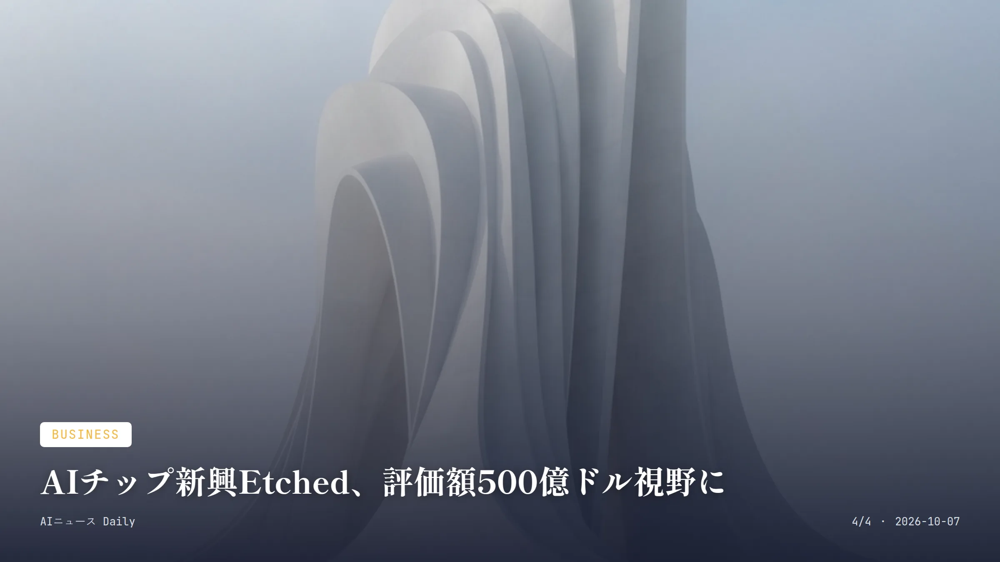
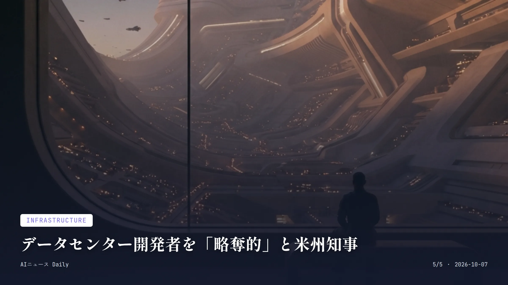

これは2026-10-07時点のアーカイブページです。最新のニュースはこちら
本サイトはアフィリエイトプログラムによる収益を得ている場合があります。
本サイトはGoogle AdSense等の広告配信サービスを利用しています。
約1分で読める
韓国の銀行7社に攻撃、AI悪用の疑いと報道
6万5000人超の情報流出、金融当局が緊急点検へ
6万5000人超影響を受けた顧客数(7金融機関合計)
2万5729人新韓銀行単独の情報流出件数
2026年9月末から10月初旬にかけて、韓国の新韓銀行やKB国民銀行、ハナ銀行など複数の金融機関が立て続けにサイバー攻撃を受けた。新韓銀行だけでも顧客2万5729人の氏名や電話番号、年収といった情報が流出しており、イェガラム貯蓄銀行など第2金融圏を含めると、被害は7社以上・6万5000人超にまで広がっている。
調査を進める中で、攻撃に使われたサーバーから、中国語圏のオープンソースコミュニティで出回っている自律型侵入テストツール「ARTEX AI」の痕跡が見つかった。李在明大統領はAIを悪用した攻撃の可能性があるとして、金融業界全体にセキュリティー対策の強化を指示している。
なぜ重要か
AIエージェントが自律的な不正侵入ツールとして使われた疑いが出たという、世界的にも珍しい大規模事例。日本ではまだ同種の大規模被害は報告されていないけれど、金融機関の業務支援システムが狙われる構図は共通していて、国内の金融機関にとっても対策を見直すきっかけになりそうだ。
約1分で読める
みずほ、AI社員代行「Cowork」3万人に導入へ
交通費精算や監査も自律処理、2027年度に本格展開
3万人導入目標の従業員数(みずほFG・みずほ銀行・みずほ信託銀行計)
2027年度本格導入を目指す時期
みずほフィナンシャルグループが、従業員がパソコンで行ってきた作業を自律的に処理するAIエージェント基盤「みずほCowork」を開発し、2026年8月から一部部門でPoCを始めた。2027年度をめどに、みずほFGとみずほ銀行、みずほ信託銀行あわせて約3万人への導入を目指す。
対象になるのは交通費精算やSNS分析、業務監査など、これまで人が一件ずつ対応してきた非定型タスクだ。社員が目的と必要な資料を渡せば、AIエージェントが与えられた権限の範囲で作業手順を組み立て、複数の資料を横断した調査や分析、レポート作成までこなす仕組みになっている。
なぜ重要か
大手銀行が非定型業務までAIエージェントに委ねる方針を打ち出した点で、日本の大企業における『AI同僚』導入の先行例になりそうだ。同業他社や他業種にどう波及するか、現場の仕事そのものがどう組み替わるかが次の焦点になる。
約1分で読める
Copilotに新モデル追加、文書作成でも選択可に
GPT-6.1 SolとClaude Sonnet 5.5が順次利用可能に
2モデル今回追加されたAIモデル数(GPT-6.1 Sol/Claude Sonnet 5.5)
2026年9月30日ロールアウト開始日
Microsoftは2026年9月30日、Microsoft 365 Copilotで選べるAIモデルに、OpenAIの「GPT-6.1 Sol」とAnthropicの「Claude Sonnet 5.5」を加えると発表した。両モデルはまずCopilot CoworkとCopilot Studioで使えるようになり、課金は従量制だ。
そこから1週間ほどかけて、Word・Excel・PowerPoint・Copilot Chatにも順次広がり、Microsoft 365 Copilotのユーザーサブスクリプションライセンスの範囲内で使えるようになる。タスクに応じてモデルを選べる点がポイントだ。
なぜ重要か
普段使っているWordやExcelの中で、複数のAI企業のモデルを使い分けられるようになる変化は、仕事でAIを日常的に使う人に直結する話だ。モデルごとに得意不得意があるとされ、日本のOffice利用者も来週以降、画面上で切り替えて試す場面が増えそうだ。

Business
約1分で読める
AIチップ新興Etched、評価額500億ドル視野に
9月の210億ドル評価からわずか数カ月で倍増へ
400億〜500億ドル今回のオファーで示された評価額
210億ドル9月の資金調達時点の評価額
半導体スタートアップのEtchedが、400億〜500億ドル規模の評価額での資金調達オファーを受けていることが分かった。同社は9月に210億ドルの評価額で7億ドルを調達したばかりで、ここからわずか数カ月で評価額が倍以上に跳ね上がる可能性がある。
Etchedは、大規模言語モデルの推論処理に特化した専用チップを開発しており、NVIDIAの汎用GPUに対抗する存在として注目を集めている。自社システムならNVIDIA製チップより低コストで多くのトークンを処理できると、同社は主張している。
なぜ重要か
巨大IT企業以外にも、AI向け専用半導体のスタートアップへ資金が集中している一例だ。NVIDIA一強だったAIチップ市場に対抗馬が増えれば、いずれデータセンターの価格競争を通じて、クラウドAIサービスの利用料金が下がる形で一般利用者にも跳ね返ってくるかもしれない。

Infrastructure
約1分で読める
データセンター開発者を「略奪的」と米州知事
AIデータセンター拡大巡り、組合との溝も浮き彫りに
2026年10月6日ワシントン・ポストの報道日
9月17日AI Horizons Summitでのシャピロ知事講演日(ピッツバーグ)
米ペンシルベニア州のジョシュ・シャピロ知事が、AI向けデータセンターの開発を巡って『略奪的』な開発業者を批判していることが、米紙ワシントン・ポストの報道で明らかになった。一方で、雇用創出に期待する労働組合側は、知事の姿勢に必ずしも同調していないという。
シャピロ知事は9月17日にピッツバーグで開かれた『AI Horizons Summit』で基調講演を行うなど、AIインフラの誘致には積極的に動いてきた人物でもある。データセンター拡大が地域の雇用や電気料金に与える影響を巡り、州政治の現場では綱引きが続いている。
なぜ重要か
AI向けデータセンターの建設ラッシュが、雇用への期待と電気料金上昇への懸念という形で、米国の地域政治を揺さぶり始めている例だ。日本でも大規模データセンター誘致が各地で進んでおり、雇用と電力コスト、住民生活をどう両立させるかは、いずれ避けて通れない論点になりそうだ。